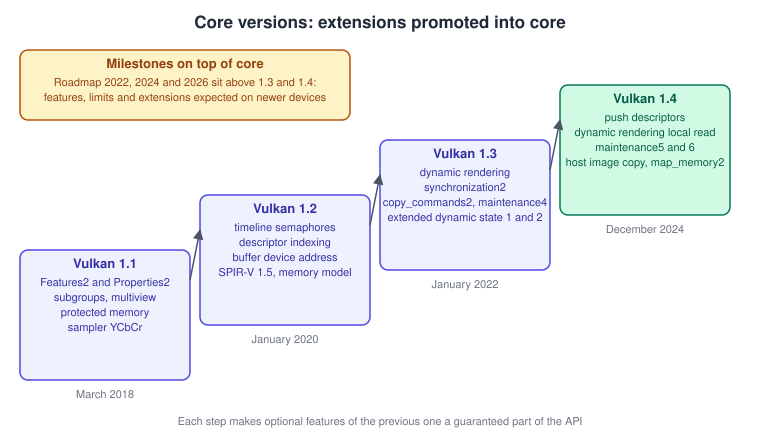
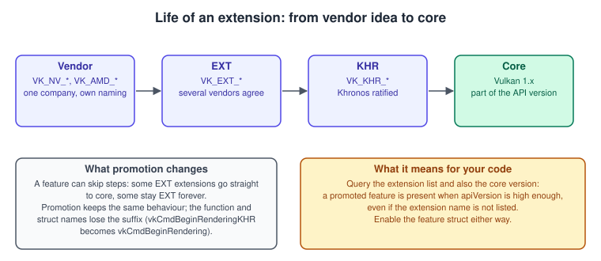
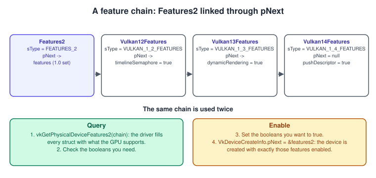
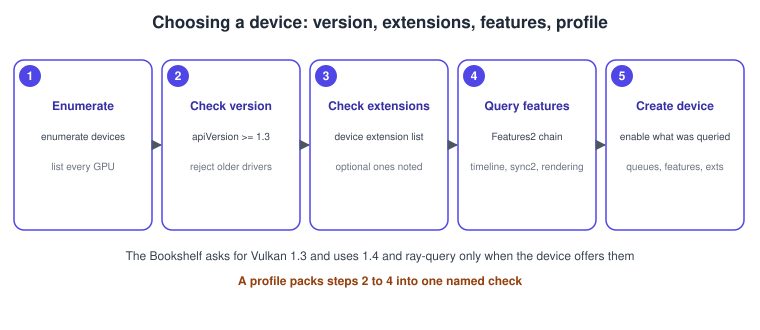

Vulkan Versions, Profiles and Extensions
|
This content was generated with the assistance of AI and should be verified against the official documentation before being relied on in production. |
Every Vulkan program starts with the same question: what can I rely on here? A game that needs dynamic rendering and timeline semaphores must run on a driver that has them, a game that wants ray-query shadows must still start on a GPU that does not, and a renderer that ships to phones, laptops and consoles needs one way to say "this is the set of features my code assumes". Vulkan answers with three mechanisms that this page explains in detail: core versions (1.0 to 1.4), extensions (named additions that may later be promoted into the core) and profiles (named, checkable sets of versions, extensions, features and limits). Understanding how they fit together removes most of the confusion in older books, whose code was written when the only version was 1.0 and almost nothing was promoted.
The facts were checked in November 2026. The version documented is Vulkan 1.4 (released on 3 December 2024) with Vulkan-Headers in the 1.4.3xx range (the 1.4.367 tag of 30 October 2026 was the newest checked) and the LunarG SDK 1.4.363.0. The running example, the Vulkan Bookshelf, requires Vulkan 1.3 as its minimum and switches on Vulkan 1.4 features and a few extensions only when the device offers them. Nothing here depends on an operating system: versions and extensions work the same on Windows, Linux, Android and, through MoltenVK or KosmicKrisp, on Apple platforms (see Vulkan on Apple: MoltenVK and KosmicKrisp).
The Bookshelf (C++20, Vulkan-Hpp RAII, VMA, GLFW or SDL3, Slang shaders with GLSL and HLSL alternatives) is at its very first step on this page: choosing the version and the feature set before the instance and device of the first frame are created. The toolchain that provides the headers is in Setting Up the Vulkan SDK and Toolchain, the instance and loader in Instance, Loader and Layers and device creation in Physical and Logical Devices. The reason an API makes you ask these questions at all is in Explicit vs Implicit APIs.
How a version number is packed
A Vulkan version is a single 32-bit integer, apiVersion, with four fields.
| Field | Bits | Meaning |
|---|---|---|
variant |
31 to 29 |
Always 0 for Vulkan itself. Other APIs that reuse the encoding, such as Vulkan SC, use a different variant. |
major |
28 to 22 |
1 for every release so far. |
minor |
21 to 12 |
0 to 4 so far (1.0, 1.1, 1.2, 1.3, 1.4). A new minor version is a new feature level. |
patch |
11 to 0 |
The specification and header revision (for example 3xx in 1.4.3xx). Patch releases fix text and add extensions but never add core features. |
You build and take apart the number with macros, not with shifts:
-
VK_MAKE_API_VERSION(variant, major, minor, patch)builds a version, and the constantsVK_API_VERSION_1_0toVK_API_VERSION_1_4are shorthands for patch 0. -
VK_API_VERSION_VARIANT,VK_API_VERSION_MAJOR,VK_API_VERSION_MINORandVK_API_VERSION_PATCHtake it apart. -
In Vulkan-Hpp the same constants are
vk::ApiVersion10tovk::ApiVersion14, andVULKAN_HPP_HEADER_VERSIONis the patch number of the headers you compiled against.
Older code uses VK_MAKE_VERSION, VK_VERSION_MAJOR and friends. They still compile, but they ignore the variant field and are
marked as legacy; use the API_VERSION forms. Both books you are likely to read (VPG, VCB) use the old macros in their first chapters.
Three version numbers, not one
| Number | What it is |
|---|---|
Header version |
The patch level of the headers you compile against ( |
Instance version |
|
Device version |
|
The practical rule is: request the highest version you can use at instance creation, clamped to what the loader supports (the Bookshelf asks for 1.4 when the loader has it and 1.3
otherwise), then check
every physical device against it. Requesting a version newer than the loader knows can make instance creation fail on very old loaders, and
requesting a lower version than you need silently hides core functionality of that version, because functions and structures of a
higher version are not guaranteed to work. Querying vkEnumerateInstanceVersion first, when the loader exports it, lets you choose
the request at run time.
Core versions and what each promoted
A new minor version does not add features out of nowhere. Almost everything in a core release was first shipped as an extension, used in practice and then promoted: its functions, structures and enums are renamed without the vendor suffix and are part of the core. Some previously optional features also become mandatory, which means every conformant implementation of that version supports them. The authoritative list is the versions appendix of the specification (see References).

| Version | Released | Promoted and mandatory (selection) |
|---|---|---|
1.0 |
February 2016 |
The base API the books VPG and VCB describe, with |
1.1 |
March 2018 |
|
1.2 |
January 2020 |
Timeline semaphores, descriptor indexing, buffer device address, the Vulkan memory model, |
1.3 |
January 2022 |
Dynamic rendering, synchronization2, |
1.4 |
3 December 2024 |
Push descriptors, dynamic rendering local read, maintenance5 and maintenance6, map memory 2, line rasterization, index type uint8, vertex attribute divisor, host image copy, pipeline robustness and protected access, shader subgroup rotate, shader float controls 2, shader expect and assume, load/store op none, global priority. Every queue that supports graphics or compute must also support transfer; several optional features (such as |
Three consequences matter every day. First, a promoted feature does not automatically become usable: features that stayed
optional in the core, such as descriptor indexing’s runtimeDescriptorArray, still have to be queried and enabled (see below).
Second, the extension may still be listed or not: a 1.3 device is allowed to report VK_KHR_dynamic_rendering and is also
allowed not to, so code that targets 1.3 or higher should use the core names and the core feature structure, and fall back to the
extension only when it supports older drivers on purpose. Third, each version is a floor, not a ceiling: a Vulkan 1.4 driver
may report hundreds of extensions beyond the core.
Version 1.4 did not remove anything. Old interfaces remain valid, and the specification’s legacy appendix lists what has been
superseded: VkRenderPass and VkFramebuffer by dynamic rendering, the first synchronization API by synchronization2,
vkGetPhysicalDeviceFeatures by the Features2 query, device layers by instance layers, VK_MAKE_VERSION by
VK_MAKE_API_VERSION, and, in a further step announced in 2026, descriptor sets and the descriptor buffer extension by descriptor
heaps (see below). Legacy means "still works, do not start new code with it".
Extensions
An extension adds functions, structures, enumerants or whole behaviours that are not part of the version you are using. It has a
name such as VK_KHR_swapchain, and it is one of two kinds:
-
an instance extension changes the instance and the loader’s view of the world (for example
VK_KHR_surface,VK_EXT_debug_utils,VK_KHR_portability_enumeration); -
a device extension adds functionality to a
VkDevice(for exampleVK_KHR_swapchain,VK_KHR_acceleration_structure,VK_EXT_mesh_shader).
The prefix tells you who stands behind it.

| Prefix | Meaning | Typical status |
|---|---|---|
|
Ratified by the Khronos working group and intended for broad implementation. |
Many are later promoted into the core (timeline semaphore, synchronization2). Some stay extensions because they are platform specific ( |
|
Multi-vendor extension, not necessarily ratified by all members. |
Often the first step before KHR or core; for example |
|
Vendor extension, available on that vendor’s hardware. |
A vendor extension may be followed by a multi-vendor or KHR design. Treat it as an optimisation or a feature for one family of GPUs. |
|
Extensions of the layers, tools or platform owners. |
Often tied to a specific tool or platform. |
An extension can depend on another one (a device extension that needs an instance extension is the common case), and each
reference page of the registry lists "Extension Type", "Requires" and "Deprecation State". An extension may also be
deprecated (a better one exists, as with VK_EXT_debug_report and VK_EXT_debug_utils) or obsoleted (its functionality
is fully part of the core).
Checking and enabling an extension
Support is not use. The steps are always the same:
-
Enumerate what exists:
vkEnumerateInstanceExtensionPropertiesfor the instance andvkEnumerateDeviceExtensionPropertiesfor a physical device. -
Compare the name strings with the macro of the extension (for example
VK_KHR_SWAPCHAIN_EXTENSION_NAME), never with a hand-typed string. -
Enable the extension in
VkInstanceCreateInfo::ppEnabledExtensionNamesorVkDeviceCreateInfo::ppEnabledExtensionNames. -
Query and enable the feature structure that belongs to it, if any: an extension being enabled does not enable its features.
Using the functions of an extension that was not enabled is undefined behaviour, even when the driver happens to report it. The validation layer catches this, so keep it on while you develop (see Validation and Debug Utils).
// Check the version of the loader and the device, then look for extensions.
// Requires: C++20, Vulkan headers 1.3 or newer, VULKAN_HPP_NO_CONSTRUCTORS defined for designated initialisers.
#include <vulkan/vulkan_raii.hpp>
#include <algorithm>
#include <cstdint>
#include <iostream>
#include <string_view>
#include <vector>
bool hasExtension(const std::vector<vk::ExtensionProperties>& list, std::string_view name) {
return std::ranges::any_of(list, [&](const vk::ExtensionProperties& e) {
return name == e.extensionName.data();
});
}
int main() {
vk::raii::Context context;
// 1. What does the loader support? (vkEnumerateInstanceVersion, Vulkan 1.1 and later loaders)
const std::uint32_t loaderVersion = context.enumerateInstanceVersion();
std::cout << "Loader supports Vulkan "
<< VK_API_VERSION_MAJOR(loaderVersion) << '.'
<< VK_API_VERSION_MINOR(loaderVersion) << '.'
<< VK_API_VERSION_PATCH(loaderVersion) << '\n';
if (loaderVersion < vk::ApiVersion13) {
std::cerr << "The Bookshelf needs a Vulkan 1.3 loader\n";
return 1;
}
// 2. Create the instance. This short example asks for 1.3; the Bookshelf policy below asks for 1.4 when available.
const vk::ApplicationInfo app{
.pApplicationName = "Vulkan Bookshelf",
.applicationVersion = VK_MAKE_API_VERSION(0, 0, 1, 0),
.pEngineName = "No Engine",
.engineVersion = VK_MAKE_API_VERSION(0, 0, 1, 0),
.apiVersion = vk::ApiVersion13,
};
const vk::InstanceCreateInfo instanceInfo{.pApplicationInfo = &app};
vk::raii::Instance instance(context, instanceInfo);
// 3. Inspect every GPU: its version and a few extensions the Bookshelf can use.
for (const vk::raii::PhysicalDevice& gpu : instance.enumeratePhysicalDevices()) {
const vk::PhysicalDeviceProperties props = gpu.getProperties();
const auto extensions = gpu.enumerateDeviceExtensionProperties();
std::cout << props.deviceName.data() << ": Vulkan "
<< VK_API_VERSION_MAJOR(props.apiVersion) << '.'
<< VK_API_VERSION_MINOR(props.apiVersion) << '.'
<< VK_API_VERSION_PATCH(props.apiVersion) << '\n';
std::cout << " swapchain: " << hasExtension(extensions, VK_KHR_SWAPCHAIN_EXTENSION_NAME) << '\n';
std::cout << " ray query: " << hasExtension(extensions, VK_KHR_RAY_QUERY_EXTENSION_NAME) << '\n';
std::cout << " mesh shader: " << hasExtension(extensions, VK_EXT_MESH_SHADER_EXTENSION_NAME) << '\n';
std::cout << " descriptor heap: " << hasExtension(extensions, VK_EXT_DESCRIPTOR_HEAP_EXTENSION_NAME) << '\n';
}
}Two details of this example matter. The ApiVersion13 request still lets a device report 1.4 in its properties; you simply do not
use 1.4 core functions unless you asked for them (the version policy at the end of the page shows how the Bookshelf handles that).
And the check of the list is by name: an extension that was promoted into the core may be absent from the list on a driver that implements the core
version, so ask for the core structure first and fall back to the extension name only for older versions.
Feature structures and the pNext chain
An extension or version defines which functions exist; features decide which of them a device actually supports and which you
asked to use. Features are Boolean fields of structures. Vulkan 1.0 had one structure, VkPhysicalDeviceFeatures. Everything newer
is chained to it through the pNext field, a void* that every extensible structure starts with, right after its sType.

The rules of sType and pNext:
-
sTypeis the first member of every extensible structure and must hold the value that names its type. The loader, layers and driver walk the chain by readingsTypeand the nextpNext. Wrong or missing values are the most common cause of "feature not enabled" bugs. -
pNextof the last structure must be null. A structure may appear only once in a chain. -
A structure that the implementation does not know is ignored if it is an input structure, but any structure belonging to an extension that is not enabled is invalid (the validation layer reports it).
-
The query function
vkGetPhysicalDeviceFeatures2(core 1.1, previouslyVK_KHR_get_physical_device_properties2) fills the chain with what the GPU supports. At device creation the same chain, with only the booleans you want left true, is passed throughVkDeviceCreateInfo::pNextand enables them.VkDeviceCreateInfo::pEnabledFeaturesmust then be null. -
The same pattern exists for properties:
vkGetPhysicalDeviceProperties2withVkPhysicalDeviceVulkan11PropertiestoVulkan14Propertiesand extension property structures.
From Vulkan 1.2 on there is one structure per version, VkPhysicalDeviceVulkan11Features, Vulkan12Features, Vulkan13Features
and Vulkan14Features, that collects the features of all extensions promoted in that version, so you do not need one structure per
old extension. If you also add the structure of a promoted extension, such as VkPhysicalDeviceTimelineSemaphoreFeatures, both
must agree; the validation layer rejects contradicting values. The convention for new code is to use the version structures for
what the core provides and extension structures only for what is still an extension.
| Feature | Structure (core) | Why the Bookshelf needs it |
|---|---|---|
|
|
Frames in flight with a single timeline semaphore (see Timeline Semaphores and Frames in Flight). |
|
|
Instanced books that index a texture array (see Bindless: Descriptor Indexing, Buffer and Heap). |
|
|
The render loop without render passes and with the new barriers (see Dynamic Rendering and Synchronization and Sync2). |
|
|
Optional 1.4 paths: push descriptors for per-draw textures, host image copies for texture upload, local read for deferred shading. |
The Vulkan-Hpp StructureChain template builds such a chain and sets every sType for you. Chains also let you ask the driver once
and keep the answer:
// Query the features the Bookshelf wants, refuse devices that lack the mandatory ones, enable what is supported.
#include <vulkan/vulkan_raii.hpp>
#include <optional>
#include <vector>
struct BookshelfFeatures {
bool hasVulkan14 = false;
bool pushDescriptor = false;
bool hostImageCopy = false;
};
// Returns the optional features that are available, or nothing when a mandatory feature is missing.
std::optional<BookshelfFeatures> checkFeatures(const vk::raii::PhysicalDevice& gpu) {
const auto props = gpu.getProperties();
if (props.apiVersion < vk::ApiVersion13) return std::nullopt;
// The chain contains one structure per version: sType and pNext are filled by StructureChain.
const auto chain = gpu.getFeatures2<vk::PhysicalDeviceFeatures2,
vk::PhysicalDeviceVulkan12Features,
vk::PhysicalDeviceVulkan13Features,
vk::PhysicalDeviceVulkan14Features>();
const auto& f12 = chain.get<vk::PhysicalDeviceVulkan12Features>();
const auto& f13 = chain.get<vk::PhysicalDeviceVulkan13Features>();
const auto& f14 = chain.get<vk::PhysicalDeviceVulkan14Features>();
const auto& f10 = chain.get<vk::PhysicalDeviceFeatures2>().features;
// Mandatory for the running example.
if (!f12.timelineSemaphore || !f12.bufferDeviceAddress || !f12.descriptorIndexing) return std::nullopt;
if (!f13.dynamicRendering || !f13.synchronization2) return std::nullopt;
if (!f10.samplerAnisotropy) return std::nullopt;
BookshelfFeatures result;
result.hasVulkan14 = props.apiVersion >= vk::ApiVersion14;
// A 1.3 device that exposes the 1.4 structures with all values false is simply not 1.4.
result.pushDescriptor = result.hasVulkan14 && f14.pushDescriptor;
result.hostImageCopy = result.hasVulkan14 && f14.hostImageCopy;
return result;
}
// Build the device with a chain that enables exactly what the Bookshelf uses.
vk::raii::Device makeDevice(const vk::raii::PhysicalDevice& gpu, std::uint32_t queueFamily,
const BookshelfFeatures& wanted) {
const float priority = 1.0f;
const vk::DeviceQueueCreateInfo queueInfo{
.queueFamilyIndex = queueFamily, .queueCount = 1, .pQueuePriorities = &priority};
// Enable only what is needed; the order inside the chain does not matter.
vk::StructureChain<vk::DeviceCreateInfo,
vk::PhysicalDeviceFeatures2,
vk::PhysicalDeviceVulkan12Features,
vk::PhysicalDeviceVulkan13Features,
vk::PhysicalDeviceVulkan14Features> chain;
chain.get<vk::PhysicalDeviceFeatures2>().features.samplerAnisotropy = VK_TRUE;
auto& f12 = chain.get<vk::PhysicalDeviceVulkan12Features>();
f12.timelineSemaphore = VK_TRUE;
f12.bufferDeviceAddress = VK_TRUE;
f12.descriptorIndexing = VK_TRUE;
f12.runtimeDescriptorArray = VK_TRUE;
f12.descriptorBindingPartiallyBound = VK_TRUE;
auto& f13 = chain.get<vk::PhysicalDeviceVulkan13Features>();
f13.dynamicRendering = VK_TRUE;
f13.synchronization2 = VK_TRUE;
auto& f14 = chain.get<vk::PhysicalDeviceVulkan14Features>();
f14.pushDescriptor = wanted.pushDescriptor ? VK_TRUE : VK_FALSE;
f14.hostImageCopy = wanted.hostImageCopy ? VK_TRUE : VK_FALSE;
// On a 1.3 device the 1.4 structure must not be in the chain.
if (!wanted.hasVulkan14) chain.unlink<vk::PhysicalDeviceVulkan14Features>();
const char* extensions[] = {VK_KHR_SWAPCHAIN_EXTENSION_NAME};
auto& info = chain.get<vk::DeviceCreateInfo>();
info.queueCreateInfoCount = 1;
info.pQueueCreateInfos = &queueInfo;
info.enabledExtensionCount = 1;
info.ppEnabledExtensionNames = extensions;
return vk::raii::Device(gpu, info);
}Notes on the code. Use the structures of a core version only when the instance was created with at least that version, and the
device supports it: the Bookshelf therefore requests 1.4 at the instance when the loader supports it, accepts 1.3 devices, and
removes the 1.4 structure from the chain on those. The unlink call removes a structure from the chain without destroying it. Every structure in the chain whose features you do not
set stays at its default of false, which is what you want.
The equivalent in the C API links the structures by hand:
VkPhysicalDeviceVulkan13Features f13 = { .sType = VK_STRUCTURE_TYPE_PHYSICAL_DEVICE_VULKAN_1_3_FEATURES };
VkPhysicalDeviceVulkan12Features f12 = { .sType = VK_STRUCTURE_TYPE_PHYSICAL_DEVICE_VULKAN_1_2_FEATURES,
.pNext = &f13 };
VkPhysicalDeviceFeatures2 features2 = { .sType = VK_STRUCTURE_TYPE_PHYSICAL_DEVICE_FEATURES_2,
.pNext = &f12 };
vkGetPhysicalDeviceFeatures2(physicalDevice, &features2); // the driver fills all three structures
if (!f13.dynamicRendering || !f13.synchronization2 || !f12.timelineSemaphore) {
/* reject this device */
}
VkDeviceCreateInfo deviceInfo = { .sType = VK_STRUCTURE_TYPE_DEVICE_CREATE_INFO,
.pNext = &features2 /* pEnabledFeatures stays NULL */ };Source: Vulkan Guide: Enabling Features.
The C version also shows the main mistake of the pattern: it enables every feature the driver reports, which is correct for a sample but wasteful in a game. Enabling a feature can cost performance or change the behaviour of the driver (robustness features are the classic example), so copy the supported values only for the features you use.
Common mistakes with versions, extensions and features
| Mistake | Consequence and fix |
|---|---|
Using a promoted function through its extension name on a 1.3 device without enabling the extension |
Undefined behaviour. Use the core name ( |
Enabling a feature whose structure was not queried |
The driver may not support it; device creation then fails with |
Mismatched |
Validation errors, or silently ignored structures. Use |
Requesting |
Instance creation can fail on old loaders; query |
Assuming the extension list contains promoted extensions |
Check the core version first; look at the extension name only for versions below the promotion. |
Hard-coding extension names as strings |
A typo is a silent "not supported". Use the |
Using the Features2 structure and also |
Not allowed; one of them must be absent. Use Features2 only. |
Roadmap milestones
Core versions come slowly (1.3 in 2022, 1.4 in late 2024), while hardware and drivers improve all the time. The Vulkan Roadmap milestones close that gap. A milestone is a profile (see next section) that names the version, the features, the limits and the extensions a newer device is expected to offer, aimed at devices that ship in a given year: mid-range and high-end phones, tablets, laptops, consoles and desktops.
| Milestone | Builds on | Content (selection) |
|---|---|---|
Roadmap 2022 |
Vulkan 1.3 |
Many formerly optional features ( |
Roadmap 2024 |
Roadmap 2022 |
Shader and rasteriser features that had existed for long without being universal: |
Roadmap 2026 |
Roadmap 2024 and Vulkan 1.4 |
Announced on 23 January 2026 together with the descriptor heap extension. Host image copy, |
A milestone is not a version. A GPU may support Vulkan 1.4 and not Roadmap 2026, and a Roadmap 2026 device may offer more than the milestone requires. Its purpose is to let developers target "the devices of 2026" with one name instead of auditing every feature, and to let vendors aim their drivers at a known bar.
Which of your players' devices satisfy a milestone is a question for the profile checker below, not for a table of marketing names.
Profiles
A Vulkan Profile is a JSON description of a set of requirements: an API version, extensions, features, properties (limits), formats and queue-family capabilities. Khronos publishes profiles such as the Roadmap milestones and the Android Baseline 2022, and platform profiles such as the Android Baseline 2022 profile and the Vulkan Profile for Android (VPA-16) tell a game what an entire class of devices has in common.
Profiles solve three problems:
-
Checking: instead of testing a dozen features one by one, ask whether the device supports the profile.
-
Emulation: the profiles layer (
VK_LAYER_KHRONOS_profiles) lets a high-end desktop GPU behave like a mid-range device, by capping its features and limits to those of the profile, so that you can find portability bugs without owning every device. It is configured invkconfig. -
Code: the profile library lets you create the instance and device so that all the profile’s extensions and features are enabled at once.
The tools come with the LunarG SDK. Since SDK 1.4.363 the profile tools are built around the vkprofiles executable, which
replaces the older gen_profiles script that books and blog posts may still mention.
The profile library vulkan_profiles.h is generated from the profile JSON files and offers functions that mirror the Vulkan ones:
vpGetInstanceProfileSupport and vpGetPhysicalDeviceProfileSupport return whether a profile is supported, and vpCreateInstance
and vpCreateDevice create the instance or device with the profile’s requirements enabled, in addition to what you pass in the
normal create info. The sample below shows the pattern for the Roadmap 2022 milestone with the C API:
#include <vulkan/vulkan.h>
#include <vulkan/vulkan_profiles.h> // generated from the profile JSON; ships with the SDK
// The profile to require: name and the version of its description.
static const VpProfileProperties kProfile = {
VP_KHR_ROADMAP_2022_NAME,
VP_KHR_ROADMAP_2022_SPEC_VERSION
};
bool createBookshelfDevice(VkInstance instance, VkPhysicalDevice gpu, const VkDeviceCreateInfo* deviceInfo,
VkDevice* device) {
VkBool32 supported = VK_FALSE;
if (vpGetPhysicalDeviceProfileSupport(instance, gpu, &kProfile, &supported) != VK_SUCCESS || !supported) {
return false; // this GPU does not meet the profile
}
VpDeviceCreateInfo vpInfo = {};
vpInfo.pCreateInfo = deviceInfo; // queues and anything beyond the profile
vpInfo.enabledFullProfileCount = 1;
vpInfo.pEnabledFullProfiles = &kProfile; // the profile's extensions and features are added for you
return vpCreateDevice(gpu, &vpInfo, nullptr, device) == VK_SUCCESS;
}Source: Vulkan Profiles tools and library and Vulkan Guide: Profiles. The profile definitions are in the Roadmap appendix of the specification.
The pattern works the same for the Android Baseline 2022 profile on a phone and for a profile you define yourself. A custom profile is useful for a game: write down the version, features and limits the Bookshelf needs, generate the library, and the "does this device run my game?" check at start-up is one function call, with a clean error message instead of a validation error three screens later.
What profiles do not do
-
They describe support; they do not make a missing feature work. A device that does not meet a profile stays unsupported for it.
-
They are not a security or performance statement. Two devices that meet Roadmap 2026 can differ by a factor of ten in speed.
-
The emulation layer reduces what the application sees, but it does not reproduce the timing of another GPU, so it finds portability bugs and not performance problems.
-
A profile can contain a version of itself:
VP_KHR_ROADMAP_2022_SPEC_VERSIONcan change as the definition is corrected, so record it with the game’s requirements.
Descriptor heaps and other changes in 2026
Two announcements of January 2026 changed what new code should look at. The Roadmap 2026 milestone raises the baseline as
described above, and the VK_EXT_descriptor_heap extension (introduced with header 1.4.340) is designed to replace Vulkan’s
descriptor set mechanism in the long run while remaining compatible with legacy descriptor sets. The working group said it would
collect developer feedback before standardising it as a KHR extension in a later roadmap milestone, so the Bookshelf treats it
as an experimental path and keeps descriptor indexing and buffer device address as its default (see
Bindless: Descriptor Indexing, Buffer and Heap).
The practical advice is the same as for every extension: check the extension name, query its feature structure, enable it,
and keep an alternative path.
Other recent facts that affect version decisions:
-
The LunarG SDK dropped the specification PDF in 1.4.357; read the specification online at
docs.vulkan.orgor build it from the Vulkan-Docs repository. -
The SDK 1.4.363.0 (29 September 2026) is available for Windows, Linux and macOS, and on macOS ships KosmicKrisp, a Vulkan 1.4 conformant driver on Metal 4 that needs macOS 26 or newer, next to MoltenVK, whose release 1.4.2 (24 July 2026) is the Vulkan 1.4 portability layer.
-
Vulkan SC 1.0 is a separate, safety-critical API based on a fixed older Vulkan baseline; it does not follow these version numbers (see Vulkan SC and Embedded Systems).
The version policy of the Bookshelf
The running example uses one explicit policy, which you can copy for your own project:
-
Minimum: Vulkan 1.3, with the features of the table above. A device below this is reported with a clear message and rejected. This gives dynamic rendering, synchronization2, timeline semaphores, descriptor indexing and buffer device address without extension fallbacks.
-
Preferred: Vulkan 1.4 on the instance and device when available, enabling push descriptors and host image copy as optional paths; the renderer chooses at start-up and logs the decision.
-
Optional extensions, each behind a feature flag:
VK_KHR_ray_query(and acceleration structures) for ray-query shadows and picking,VK_EXT_mesh_shaderfor the shelf,VK_EXT_descriptor_heapas an experiment. See Ray Tracing, Mesh and Task Shaders and Bookshelf 1: From a Triangle to a Textured Book. -
Profile check (optional): a custom profile with the minimum above, so that the start-up check and the emulation in
vkconfiguse the same description.

Where the older books are outdated
| Older practice (VPG, VCB 2016-2017) | Today | Where it is explained |
|---|---|---|
|
|
This page. |
|
|
This page and Physical and Logical Devices. |
One Vulkan version (1.0); extensions are rare |
Four core versions; features are promoted from extensions; per-version feature structures. |
This page. |
No concept of profiles or roadmap |
Roadmap 2022, 2024 and 2026, Android Baseline 2022, Vulkan Profiles tools and emulation layer. |
This page. Neither book covers profiles. |
Extensions listed by hand-typed names |
The |
This page. |
The SDK is a Windows and Linux download with the specification as a PDF |
SDK for Windows, Linux and macOS, specification online (PDF removed from the SDK in 1.4.357). |
The books remain useful for the concepts they explain well (the object model, command buffers, memory); each page of this sub-section lists its own old-to-new replacements, starting with Instance, Loader and Layers for layers and the loader. The same ideas on the other APIs are in the OpenGL track (versions and extensions, see OpenGL) and the Metal track (OS-tied API versions, see Metal).
References
-
Vulkan specification, versions appendix: https://docs.vulkan.org/spec/latest/appendices/versions.html
-
Vulkan specification, legacy functionality appendix: https://docs.vulkan.org/spec/latest/appendices/legacy.html
-
Vulkan specification, Roadmap appendix: https://docs.vulkan.org/spec/latest/appendices/roadmap.html
-
Vulkan Guide, enabling extensions: https://docs.vulkan.org/guide/latest/enabling_extensions.html
-
Vulkan Guide, enabling features: https://docs.vulkan.org/guide/latest/enabling_features.html
-
Vulkan Guide, pNext and sType: https://docs.vulkan.org/guide/latest/pnext_and_stype.html
-
Vulkan Guide, deprecated functionality: https://docs.vulkan.org/guide/latest/deprecated.html
-
Khronos, Vulkan 1.4 announcement: https://www.khronos.org/news/press/khronos-streamlines-development-and-deployment-of-gpu-accelerated-applications-with-vulkan-1.4
-
Khronos, Vulkan Roadmap 2026 and the descriptor heap extension: https://www.khronos.org/blog/vulkan-introduces-roadmap-2026-and-new-descriptor-heap-extension
-
Vulkan Profiles tools and library: https://github.com/KhronosGroup/Vulkan-Profiles
-
LunarG SDK 1.4.363.0 release notes: https://www.lunarg.com/lunarg-releases-vulkan-sdk-1-4-363-0/
-
Vulkan registry and reference pages: https://registry.khronos.org/vulkan/
-
Vulkan-Headers: https://github.com/KhronosGroup/Vulkan-Headers
-
MoltenVK releases: https://github.com/KhronosGroup/MoltenVK/releases
-
Vulkan Programming Guide (InformIT): https://www.informit.com/store/vulkan-programming-guide-the-official-guide-to-learning-9780134464541
-
Vulkan Cookbook (Packt): https://www.packtpub.com/en-us/product/vulkan-cookbook-9781786468154